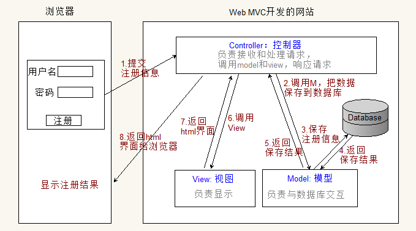
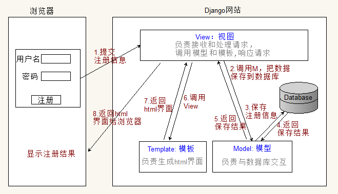

Django介绍
1. 简介
Django，发音为[`dʒæŋɡəʊ]，是用python语言写的开源web开发框架，并遵循MVC设计。劳伦斯出版集团为了开发以新闻内容为主的网站，而开发出来了这个框架，于2005年7月在BSD许可证下发布。这个名称来源于比利时的爵士音乐家DjangoReinhardt，他是一个吉普赛人，主要以演奏吉它为主，还演奏过小提琴等。由于Django在近年来的迅速发展，应用越来越广泛，被著名IT开发杂志SDTimes评选为2013SDTimes100，位列"API、库和框架"分类第6位，被认为是该领域的佼佼者。
Django的主要目的是简便、快速的开发数据库驱动的网站。它强调代码复用，多个组件可以很方便的以"插件"形式服务于整个框架，Django有许多功能强大的第三方插件，你甚至可以很方便的开发出自己的工具包。这使得Django具有很强的可扩展性。它还强调快速开发和DRY(DoNotRepeatYourself)原则。
Django特点
对比Flask框架，Django是重量级框架，Django原生提供了众多的功能组件，让开发更简便快速。
- 数据库ORM支持
- 模板
- 表单
- 认证权限
- Admin管理站点
- session机制
- 缓存
2. Web MVC模式
上个世纪八十年代为Smalltalk语言发明的一种 软件框架模式，最开始用于Desktop程序开发，现在已被广泛使用，包括Web开发。
MVC: Model-View-Controller 模型-视图-控制器
- M： model层，负责 数据处理，包括对数据的增删改查等操作
- V： view层，负责 界面显示
- C： controller层，负责 逻辑控制，接收和处理请求，调用model和view
核心思想： 分层，解耦。MVC分离了 数据处理 和 界面显示 的代码，使得一方代码修改了不会影响到另外一方，提高了程序的扩展性和可维护性。
Web开发中的MVC：

3. Django的MVT模式
Django MVT 模式
- M： Model, 模型 与MVC中的M相同，负责对数据的处理
- V： View, 视图 与MVC中的C类似，负责处理用户请求，调用M和T，响应请求
T： Template, 模板 与MVC中的V类似，负责如何显示数据（产生html界面）

说明:
Django也是MVC框架，但换了一个名字
Django follows the MVC pattern closely, however it does use its own logic in the implementation. Because the “C” is handled by the framework itself
关于MVT的名字，参考：The Django Book